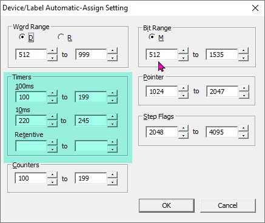
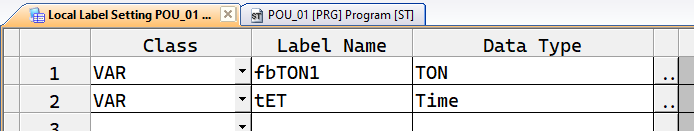
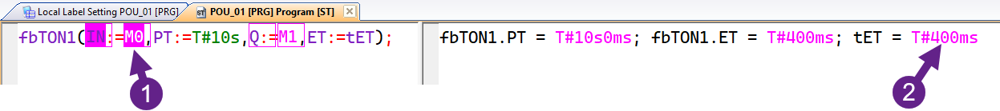

Таймеры в программировании ПЛК
Таймеры — один из ключевых элементов программирования программируемых логических контроллеров (ПЛК). Они используются практически во всех программах, будь то управление процессами, создание задержек или реализация циклических операций. В ПЛК серии FX3G/FX3U таймеры особенно важны, так как они поддерживают как стандартные функциональные блоки (ФБ) по МЭК-61131-3, так и встроенные инструкции, специфичные для среды GX Works 2. В этой статье мы разберем:
- Стандарт МЭК-61131-3 и функциональные блоки
TON,TOF,TP. - Инструкцию
OUT_Tдля работы с аппаратными таймерами. - Создание собственного тикера для гибкого управления временем.
Стандарт МЭК-61131-3
В соответствии со стандартом МЭК-61131-3, в среде GX Works 2 доступны три типа стандартных функциональных блоков таймеров: TON (включение с задержкой), TOF (выключение с задержкой) и TP (импульсный таймер). Эти блоки удобны для создания таймеров в программах, но имеют определенные ограничения, о которых важно знать.
Ограничения использования функциональных блоков
Количество функциональных блоков TON, TOF и TP, которые можно использовать в программе, ограничено количеством доступных таймеров в области памяти T. GX Works 2 автоматически назначает таймеры из области T для каждого экземпляра функционального блока. Эти таймеры задаются в настройках: Меню → Tools → Device/Label Automatic-Assign Settings....

Если вы превысите лимит доступных таймеров, программа не скомпилируется. Поэтому важно заранее планировать количество используемых блоков.
Функциональный блок TON
TON (Timer On-Delay) — таймер с задержкой включения. Он запускается, когда входной сигнал IN становится истинным, и активирует выход Q после заданного времени PT. Время, прошедшее с начала работы таймера, сохраняется в переменной ET.
Пример объявления экземпляра блока TON:

Код для вызова блока в программе:
fbTON1(IN:=M0, PT:=T#10s, Q:=M1, ET:=tET);Как это работает:
Если контакт M0 замкнут (например, при подаче сигнала на вход), таймер начинает отсчет. Через 10 секунд (T#10s) выход M1 активируется (становится TRUE). Переменная tET хранит время, прошедшее с момента запуска таймера. Это удобно для отслеживания текущего состояния.
Пример симуляции работы TON:

Функциональный блок TOF
TOF (Timer Off-Delay) — таймер с задержкой выключения. Он активирует выход Q сразу, как только вход IN становится истинным, и удерживает его активным в течение времени PT после того, как вход IN становится ложным.
Пример вызова блока TOF:
fbTOF1(IN:=M2, PT:=T#5s, Q:=M3, ET:=tET2);Как это работает:
Когда M2 становится TRUE, выход M3 немедленно активируется. Если M2 становится FALSE, таймер начинает отсчет времени PT (в данном случае 5 секунд), и только после этого M3 становится FALSE. Переменная tET2 показывает, сколько времени осталось до завершения отсчета.
Функциональный блок TP
TP (Timer Pulse) — импульсный таймер. Он генерирует выходной сигнал Q на фиксированное время PT, начиная с момента, когда вход IN становится истинным. Если вход IN остается активным дольше, чем PT, это не влияет на длительность импульса.
Пример вызова блока TP:
fbTP1(IN:=M4, PT:=T#3s, Q=>M5, ET=>tET3);Как это работает:
При замыкании M4 выход M5 активируется на 3 секунды (T#3s), после чего автоматически становится FALSE, даже если M4 остается активным. Переменная tET3 показывает, сколько времени осталось до окончания импульса.
Задание для практики
Создайте три функциональных блока: BLINK1, BLINK2 и BLINK3. Каждый из них должен эмулировать поведение стандартного блока BLINK (периодическое включение/выключение выхода), но использовать разные таймеры: TON, TOF и TP соответственно.
Входные переменные:
- IN — запуск работы блока (BOOL).
- TIMELOW — время, когда выход выключен (TIME).
- TIMEHI — время, когда выход включен (TIME).
Выходные переменные:
- Q — сигнал во время активной фазы (BOOL).
- CNT — счетчик количества "морганий" (INT).
Пример поведения:
Если IN = TRUE, выход Q должен чередовать состояния: включено (TIMEHI) и выключено (TIMELOW), подсчитывая количество циклов в CNT.
Аппаратные таймеры (область T)
Помимо функциональных блоков, в GX Works 2 доступны аппаратные таймеры, которые хранятся в области памяти T. Эти таймеры имеют фиксированные диапазоны и шаг времени, что делает их удобными для определенных задач. Работа с ними осуществляется через инструкцию OUT_T, что позволяет напрямую управлять таймерами без использования функциональных блоков.
Типы таймеров в области T
| Назначение | Диапазон | Количество |
|---|---|---|
| Таймеры с шагом 100 мс | T0–T199 |
200 |
| Таймеры с шагом 10мс | T200–T245 |
46 |
| Таймеры 1 мс (EEPROM) | T246–T249 |
4 |
| Таймеры 100 мс (EEPROM) | T250–T255 |
6 |
| Таймеры с шагом 1 мс | T256–T319 |
64 |
Каждый таймер в области T представлен тремя элементами:
- TCn — катушка таймера (Timer Coil), используется для запуска таймера.
- TSn — контакт таймера (Timer State), замыкается по завершении отсчета.
- TNn — регистр времени (Timer Number), хранит текущее значение времени в шагах или заданное время работы.
Прямое обращение к ячейке, например T0, в Structured Text не используется. Вместо этого вы работаете с TC0, TS0 и TN0.
Инструкция OUT_T
Инструкция OUT_T управляет аппаратными таймерами и имеет следующий синтаксис:
OUT_T(Условие, Катушка_таймера, Время_в_шагах);Параметры:
- Условие — логическое выражение или контакт, определяющее начало работы таймера (например,
X0). - Катушка_таймера — идентификатор таймера, например
TC0. - Время_в_шагах — количество шагов времени, зависящее от типа таймера (например, для
T0шаг составляет 100 мс, значит значение 10 равно 1000 мс или 1 с).
Пример программы:
OUT_T(X0, TC0, 10);
M0 := TN0 <= 5;
Y0 := TS0;
RST(M1, TC0);Разбор примера:
- Когда вход
X0становитсяTRUE, таймерT0запускается и работает 1 секунду (10 шагов × 100 мс). - Первые 500 мс (5 шагов) контакт
M0будет активным (TN0 <= 5). - По истечении 1 секунды контакт
TS0замкнется, активируя выходY0. - Для сброса таймера используется инструкция
RSTс катушкойTC0, еслиM1 = TRUE. Это обнуляетTN0иTS0.
Сброс таймера:
Таймер можно сбросить двумя способами:
- Разомкнуть входное условие (например, установить
X0 := FALSE). При следующем замыканииX0таймер начнет отсчет заново. -
Использовать инструкцию
RST, напримерRST(M1, TC0).Для принудительного сброса. Обратите внимание, что прямое присваивание
TC0 := 0вызовет ошибку компиляции, так какTC0доступна только для чтения.
Задание для практики
Создайте собственные функциональные блоки CTON (Custom TON), CTOF (Custom TOF) и CTP (Custom TP) с использованием инструкции OUT_T. Каждый блок должен эмулировать поведение стандартных блоков TON, TOF и TP.
Входные переменные:
IN— запуск таймера (BOOL).PT— время работы в форматеTIME.
Выходные переменные:
Q— сигнал окончания работы (BOOL).ET— оставшееся время в форматеTIME.
Также создайте функциональный блок CBLINK (Custom BLINK) для реализации периодического включения/выключения выхода.
Входные переменные:
IN— запуск блока (BOOL).TIMELOW— время выключенного состояния (TIME).TIMEHI— время включенного состояния (TIME).
Выходные переменные:
Q— сигнал во время активной фазы (BOOL).
Важно
Эти блоки используют аппаратные таймеры, поэтому в программе может быть только один экземпляр каждого блока, чтобы избежать конфликта данных. Поэтому эти блоки не применимы в реальных программах, но они отлично подходят для изучения работы инструкции OUT_T.
Пример программы
Вот пример реализации функционального блока CTON с использованием инструкции OUT_T:
FUNCTION_BLOCK CTON
VAR_INPUT
IN: BOOL;
PT: TIME;
END_VAR
VAR_OUTPUT
Q: BOOL;
ET: TIME;
END_VAR
VAR
TimerValue: INT;
END_VAR
(* Преобразуем время в шаги (для таймера с шагом 100 мс) *)
TimerValue := TIME_TO_INT(PT) / 100;
OUT_T(IN, TC0, TimerValue);
Q := TS0;
(* Оставшееся время в мс *)
ET := INT_TO_TIME((TimerValue - TN0) * 100);
END_FUNCTION_BLOCKОбъяснение:
- Входное время
PTпреобразуется в шаги (например,T#1000ms→ 10 шагов для таймераT0). - Инструкция
OUT_Tзапускает таймерT0приIN = TRUE. - Выход
QстановитсяTRUE, когда таймер завершает работу (TS0 = TRUE). - Переменная
ETвычисляет оставшееся время на основе текущего значенияTN0.
Аналогичным образом можно реализовать CTOF и CTP, адаптировав логику под их поведение.
Создание собственного тикера
В некоторых средах программирования ПЛК, например CoDeSys, есть функция TIME(), которая возвращает время в миллисекундах с момента включения или сброса ПЛК в формате DWORD (32-битное беззнаковое число). Максимальное значение DWORD составляет 4 294 967 295 мс, что эквивалентно примерно 49 дням. После этого счетчик переполняется и сбрасывается. Все таймеры TON, TOF и TP написаны с использованием этой функции. Это можно увидеть открыв стандартную библиотеку на редактирование. Я привык к этой функции и использовал ее достаточно часто. Она удобна и универсальна.
В GX Works 2 нет прямого аналога функции TIME(), но мы можем создать собственный тикер, используя прерывания по времени. Это позволит гибко отслеживать время и создавать неограниченное количество таймеров без привязки к области T.
Использование прерываний
В ПЛК FX3G/FX3U доступны прерывания по времени, которые можно настроить на срабатывание с заданной периодичностью, например каждые 10мс или 50 мс. Для этого используются указатели прерываний, такие как:
I610— срабатывает каждые 10мс (событие 6).I750— срабатывает каждые 50 мс (событие 7).
Шаги для создания тикера:
-
Создание программы: В дереве проекта добавьте новую программу. ПКМ в дереве проекта на POU и добавить новые данные. Имя -
TIKER, тип — Program Block, язык — Structured Text. -
Объявление переменной: В глобальных переменных создайте переменную
TKR10типаDouble Word [Unsigned/Bit String]. Она будет хранить время с разрешением 10мс (например, значение 10 соответствует 100 мс).Почему хранить в интервалах 10мс а не в миллисекундах? Мы все равно сохраняем значение раз в 10мс, и если хранить в миллисекундах то увеличение будет идти с шагом 10мс. Но если мы хранить 1мс, то переменная
TKR10переполнится быстрей. Использование шага 10мс позволяет хранить вTKR10время до почти года без переполнения. -
Настройка прерывания:
-
В главной программе добавьте в начало инструкцию
EI(TRUE);Enable Interrupt для разрешения прерываний текущей программы. Естественно если у вас п проекте есть и другие программы, туда это тоже нужно вставить.Иногда бывает нужно какой-то участок кода отделить от прерываний, и сделать так чтобы он не прерывался. Можно использовать
DI(TRUE);Disable Interrupt перед этим участком кода и потом опятьEI(TRUE);. -
Добавим нашу программу в задачи. В Program Settings → Execution Program ПКМ на MAIN - Добавить новые данные. Имя -
TIKER, тип — Task. В дереве проекта увидим новый элемент и у нас откроется страница добавления программы. Жмем на 3 точки, и выбираем нашу программуTIKER. Это еще не все. Теперь на имени задачи ПКМ и выбираем свойства Property. В открывшемся окне, в поле Event где написаноTRUEчто значит запускать программу непрерывно, мы пишемI610.
Еще раз что мы только что сделали. Мы добавили нашу программу в задачи исполнения и указали что она должна исполнятся раз в 10мс. А в основной программе мы разрешили прерывания в любой точке программы.
-
-
Код программы тикера:
DINC(TRUE, TKR10);Объяснение:
Инструкция DINC увеличивает значение TKR10 на 1 каждые 10мс. Поскольку переменные типа Double Word [Unsigned/Bit String] не поддерживают прямые математические операции (например, TKR10 := TKR10 + 1), используется инструкция DINC.
Проверка:
Для проверки загрузите программу в реальный ПЛК, так как симуляция в GX Works 2 не поддерживает прерывания. Переменная TKR10 будет увеличиваться с высокой точностью каждые 10мс.
Почему прерывания?
Если настроить программу на выполнение с интервалом (например, T#10ms) вместо прерывания, точность тикера может пострадать. Программа будет выполняться не каждые 10мс а не чаще, чем раз в 10мс, Выполнение программы может задерживаться, если другие программы еще не завершили выполнение даже если 10мс уже истекли, мы не исполним программу пока другие не закончат свою работу, а сколько на это уйдет времени не известно, возможно даже больше чем 10мс, так что мы можем пропустить целый цикл. Прерывание же гарантирует выполнение программы TIKER точно через 10мс, прерывая любую текущую программу.
В нашем случае, мы исполним программу TIKER как только исткет 10мс, не важно что основная программа сейчас в работе. Мы прервем работу основной программы, по этому это и называется прерывание, исполним программу TIKER, а потом продолжим исполнение основной программы.
Дополнительные возможности прерывания
Инструкция REF (Refresh) позволяет обновлять входы или выходы ПЛК в середине цикла программы, не дожидаясь его завершения. Это полезно для работы с актуальными данными и часто используется именно в программах прерывания.
Пример:
Допустим у вас ПЛК 12 входов и 12 выходов и мы хотим обновить их все значения.
(* Чтение 12 входов, начиная с X0 *)
REF(TRUE, X0, 12);
(* Обновление 12 выходов, начиная с Y0 *)
REF(TRUE, Y0, 12);Пояснение:
Зачем вообще это нужно? Вы знаете что программа ПЛК исполняется циклически. Исполняется, после завершения исполняется снова, и так бесконечно. Каждое исполнение программы назовем цикл. Как мы знаем что чтение значений на входах ПЛК происходит перед началом каждого цикла программы, а обновление выходов по завершении каждого цикла.
Что бы было более понятно давайте рассмотрим пример.
Y0 := FALSE;
(* Кусок программы на 20 мс *)
IF iStep > 0 THEN
Y0 := TRUE;
END_IF;Посмотрите в нашем примере катушка Y0 принимает значения как TRUE так и FALSE и все в одной программе. Между этими назначениями проходит примерно 20мс. Вопрос. На выходе будет ли отключение на 20мс? Ответ нет. Потому что значение выхода присвоится только после завершения цикла.
Y0 := FALSE;
REF(TRUE, Y0, 1);
(* Кусок программы на 20 мс *)
IF iStep > 0 THEN
Y0 := TRUE;
REF(TRUE, Y0, 1);
END_IF;А если код будет такой, то на выходе пока исполняется одна программа, будет переключение выхода на 20мс.
Инструкция REF позволяет досрочно прочитать входа или назначит значения выходам.
Применение:
Если вход X0 изменился в середине цикла, вызов REF(TRUE, X0, 1) обновит его значение. Аналогично, установка Y10 := TRUE с последующим REF(TRUE, Y10, 1) немедленно активирует выход Y10.
Подсчет времени цикла
У Mitsubishi есть системный регистр D8010, который хранит время исполнения программы с разрешением 0,1мс. Мы можем написать блок, который будет так же считать тикер.
Ограничения
Такой блок будет работать только если у нас программа хотя бы 5000 шагов. В противном случае, время одного цикла будет меньше 1мс, и точность будет очень сильно страдать.
Точность
Так как разрешение 0,1мс, если мы предположим что один цикл программы займет 10мс и на каждый цикл у нас будет погрешность в 0,1мс в одну и туже сторону, то отклонение может составить 36 секунд на каждый час работы. Хотя это маловероятный сценарий развития событий.
-
Объявление переменной:
В глобальных переменных создайте переменную
TKR10типаDouble Word [Unsigned/Bit String]. Она будет хранить время с разрешением 10мс (например, значение 10 соответствует 100 мс).В глобальных переменных создайте переменную
TKR1типаDouble Word [Unsigned/Bit String]. Она будет хранить время с разрешением 1мс. -
Напишем Функциональный Блок:
FUNCTION_BLOCK CycleTimeCounter VAR_INPUT (* Включение/выключение подсчета времени *) Enable: BOOL; (* Сброс *) Reset: BOOL; END_VAR VAR_OUTPUT (* Общее время работы в миллисекундах *) TotalTime1Ms: DINT; (* Общее время работы в интервалах 10 мс *) TotalTime10Ms: DINT; END_VAR VAR (* Значение D8010 в единицах 0,1 мс *) LastCycleTime: INT; (* Накопленное время в 0,1 мс *) AccumulatedTime: DINT; END_VAR RST(Reset, AccumulatedTime); RST(Reset, TotalTime1Ms); RST(Reset, TotalTime10Ms); (* Проверяем, включен ли подсчет *) IF NOT Enable THEN RETURN; END_IF; (* Читаем значение системного регистра D8010 (время цикла в 0,1 мс) *) LastCycleTime := D8010; (* Добавляем время последнего цикла к накопленному времени в 0,1 мс *) DADD(TRUE, AccumulatedTime, LastCycleTime, AccumulatedTime); (* Преобразуем накопленное время в миллисекунды 1 единица D8010 = 0,1 мс *) TotalTime1Ms := AccumulatedTime / 10; (* Преобразуем накопленное время в интервалы 10 мс (1 интервал = 100 единиц D8010) *) TotalTime10Ms := AccumulatedTime / 100; END_FUNCTION_BLOCK -
Программа:
CycleTimeCounter1( Enable := M8000, Reset := M8002, TotalTime1Ms := TKR1, TotalTime10Ms := TKR10 );Пишем такой блок в начале нашей программы, и теперь у нес в переменных глобальных
TKR10иTKR1будет время от начала работы ПЛК.TKR1сможет максимум 29 дней значение потом сброс, а вотTKR10может хранить до года.
Задание для практики
Создайте собственные функциональные блоки TTON (Ticker TON), TTOF (Ticker TOF) и TTP (Ticker TP) с использованием тикера TKR10. Каждый блок должен эмулировать поведение стандартных блоков TON, TOF и TP. Такой таймер будет работать не важно как вы сделали тикер, через прерывание или через подсчет цикла.
Входные переменные:
IN— запуск таймера (BOOL).PT— время работы в форматеTIME.
Выходные переменные:
Q— сигнал окончания работы (BOOL).ET— оставшееся время в форматеTIME.
Также создайте функциональный блок CBLINK (Custom BLINK) для реализации периодического включения/выключения выхода.
Входные переменные:
IN— запуск блока (BOOL).TIMELOW— время выключенного состояния (TIME).TIMEHI— время включенного состояния (TIME).
Выходные переменные:
Q— сигнал во время активной фазы (BOOL).
Заключение
Таймеры — мощный инструмент в программировании ПЛК, позволяющий реализовать сложную логику управления временем. В GX Works 2 вы можете использовать стандартные функциональные блоки TON, TOF, TP для простоты, аппаратные таймеры с инструкцией OUT_T для большей гибкости или создать собственный тикер на основе прерываний для неограниченного количества таймеров. Понимание этих подходов и их ограничений поможет вам писать эффективные и надежные программы для ПЛК.